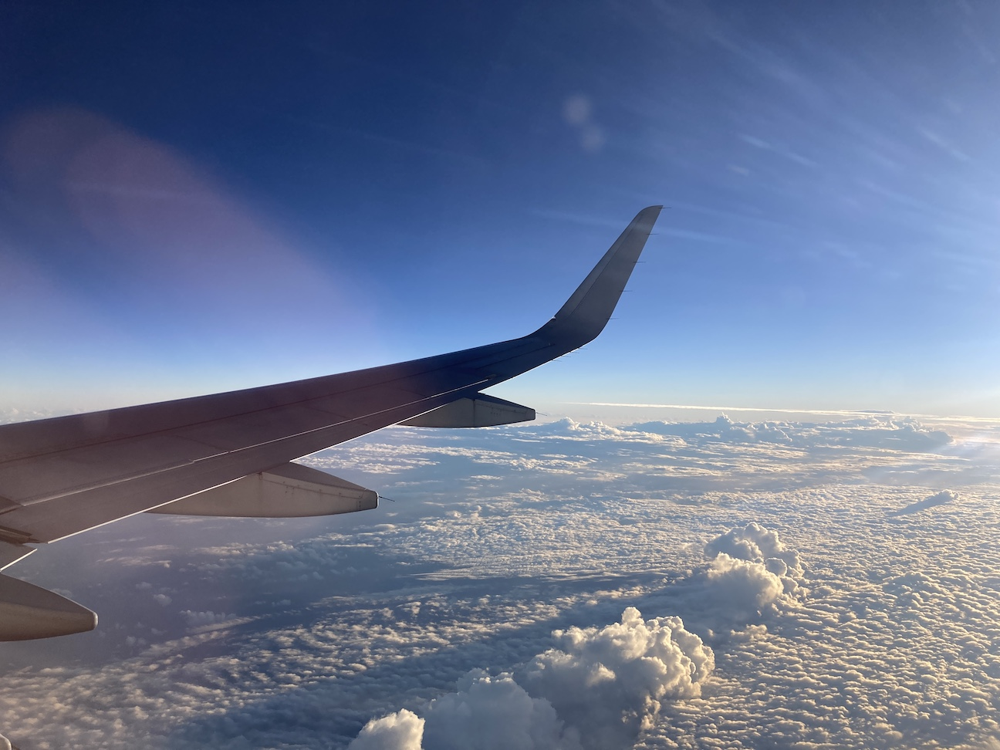
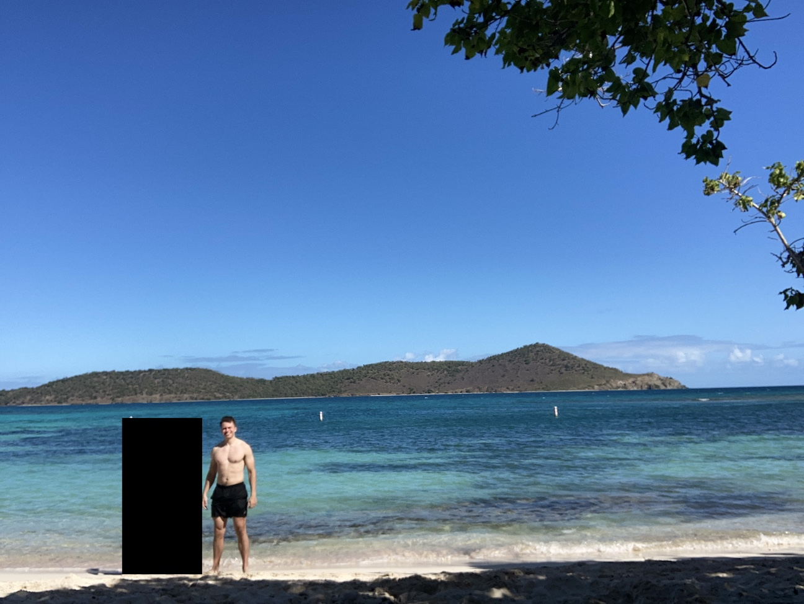
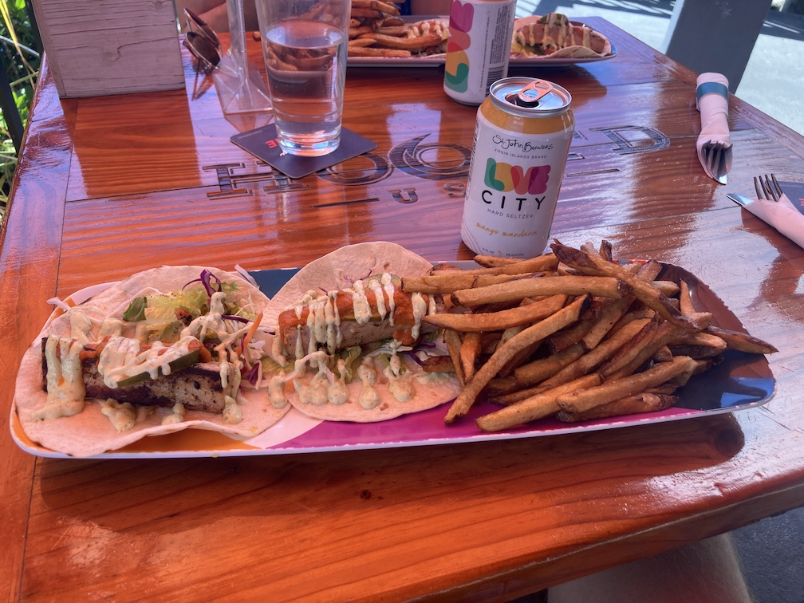
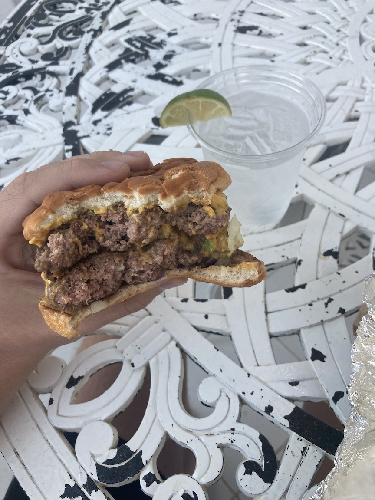
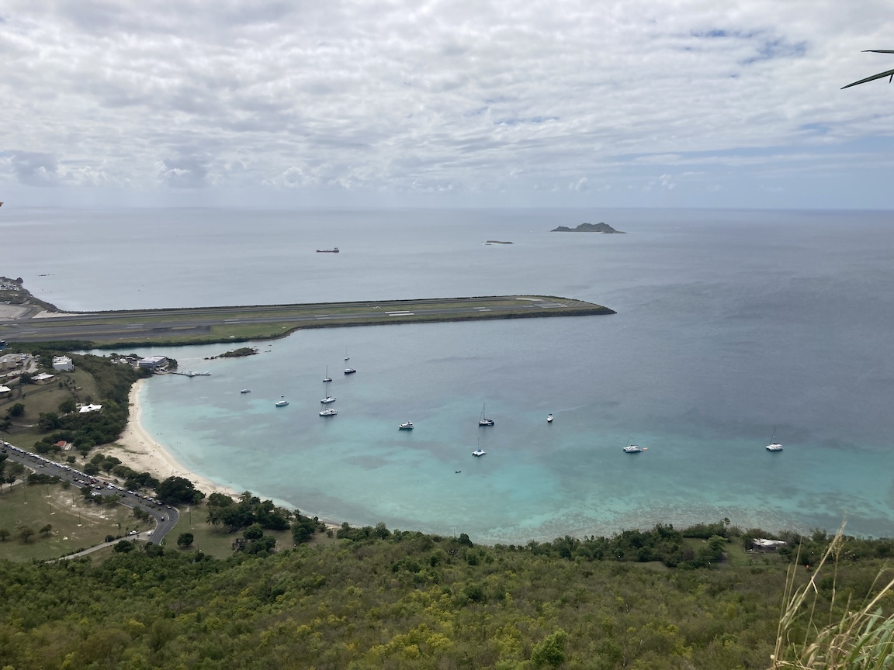
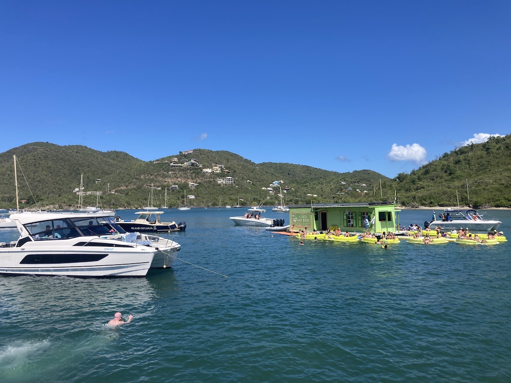

St. Thomas trip report from 07-14 February 2022, including summaries of the days, thoughts, considerations, and suggestions.
We (my friend, J, and I) arrived at DFW airport around 5:30am, got through security (no PreCheck this time—oh how bad I have it), and waited around. Watched F9: The Fast Saga and talked to old guy next to me. (Side note: huge props to airlines—at least American, I can't speak to others—for making entertainment free on flights. Definitely makes me want to fly with them a bit more than other airlines.
Second flight was delayed two hours due to a faulty intercom, but they eventually found another plane and off we went. J and I watched Casino Royale together, followed by gazing out the window at the lush blanket of orange/golden clouds we were flying over. The flight landed, we went through a zombie-movie-like COVID check-in process, then grabbed a $30 taxi to our Airbnb condo in Sapphire Village on the northeast side of the island, a five-minute drive north of Red Hook.
Exhausted from traveling and too lazy to grab a cab over to Red Hook for dinner, we had some delicious sleep for dinner.
We woke around 6:00am and headed down to The Beach Buzz, located a steep 10-minute walk away. I had a decently-sized sausage-egg-cheese bagel with an iced chai and lovely sunrise view on the side. We walked the beach, saw some crabs, then went back to prep our snorkel gear for the day.
A five-minute taxi took us to Lindquist Beach just down the road. $5/person entry fee. We set our stuff on a sun chair and were promptly (but kindly) told it was $5 for a chair. Seriously?! Now, whether this guy was trying to scam unsuspecting tourists who would happily pay a measly $5 for some comfort is unknown to us as we declined the shitty offer and opted for a picnic table instead.
Snorkeling here was pretty sweet. Not much in terms of variety, but the water was fairly clear and the coral sections on the east side offered some interesting flora.
Lunch was at Hook'd, a waterfront restaurant in Red Hook. I had a couple St. John Brewers' Love City Hard Seltzers along with fish tacos. "Dessert" was had at Duffy's Love Shack, a popular bar in the middle of Red Hook. They have a pretty extensive drink menu, and for just an extra $5, you get a sweet mug to drink with and take home.
Dinner consisted of double cheeseburgers and vodka cocktails at Sapphire Beach Bar. Good god that thing was delicious, or maybe we were just crazy hungry, or maybe a mix of both.
A 45-minute shuttle took us all the way across the island to Brewers Bay Beach, located directly north of the airport (the runway is visible from the beach itself, it's that close!).
But before the water could be felt, it needed to be earned.
Payment was through the Brewers Cave Hike, which puts hikers at an awesome rocky vantage point overlooking the bay and the airport. The trail itself is dangerously steep and is probably not for anyone who is out of shape. It took us about 30:00 minutes to get to the top. Beers (or another otherwise refreshing beverage) are recommended to celebrate the summiting.
Lunch was two delicious empanadas—one swordfish and one beef—and a cold beer. Swordfish was excellent, although I was a bit apprehensive about eating it from the food truck parked alongside the beach...
Snorkeling was solid and a welcome change from the past few days. We saw a couple of sea turtles meandering gracefully and small stingrays sticking close to the bottom. We played sand games and hid from the short Caribbean downpour.
Dinner was at Sudi's Caribbean Bar & Grille, birthplace of the famous Bushwacker (albeit the restaurant was under a different name, but still in the same place in spirit and location—a short spiel on the history here). And lemme tell ya, that thing is as good as it is famous (around the islands, that is).
Wikipedia's description is wrong:
The original recipe called for Vodka, Kahlua, Dark Crème de Cacao, Coco Lopez (cream of coconut), a splash of Triple sec and milk that's spun in a blender with ice and topped with a grating of fresh nutmeg.
And the true recipe can be found here, although they forget the prime ingredient of nutmeg, which should be shaved onto the top:
- Aged rum
- Kahlua
- Creme de cacao
- Cream of coconut
- Milk
- Ice
I've noticed the nutmeg topping is a popular choice amongst Caribbean drinks: Bushwackers use it, Painkillers use it, and I had a few more lesser-known drinks that also used it. So I investigated the history. From this blog post on rum punch with nutmeg, they mention:
We take our nutmeg very seriously in the Caribbean. West Indians have a long-standing culinary tradition which has informed us well over the generations. Nutmeg is very important to the taste balance of this drink because it is an aromatic spice which links the acidity of the lime, the bitterness of the rum and the copious amount of sugar called for in the recipe. It is as indispensable to an authentic rum punch as brown rum
Nutmeg came to Grenada in 1843, where it still produces nutmeg to this day and has since been nicknamed "Spice Island", even going so far as to add a nutmeg to their flag. I'll take the above quote's word as to why it's so popular in drinks down here.
We were up early to catch the 6:30am ferry over to St. John, possibly getting scammed along the way. A stranger in his truck picked us up since he was on his way to Red Hook, and somewhere along the mile stretch of road his rear passenger tire failed. This isn't unreasonable: the roads here are pretty rough, especially the one between Sapphire Beach and Red Hook. But what set my alarms off was him sounding like he expected us to help him. Sorry, we got a ferry to catch and it ain't my fault. I'd consider helping another time.
We made it to the Westin about an hour early and futzed around on the beach and the grounds, as well as meeting a couple of people who were going on the same excursion.
St. John Full-Day Lime Out Snorkel Sail w/ Taco Lunch & Open Bar - Westin was an excellent experience. $240-ish in the end (fee plus gratuity) for two separate snorkel spots, two boutique tacos from Lime Out, and unlimited alcohol.
The day started with a waffle and fruit breakfast (among other options) in calm waters, but some strong headwind quickly made for choppy waves and queasy stomachs. We got to the first snorkel spot in about 30 min and enjoyed it for an hour. Nothing new or noteworthy from what we had seen the past couple of days.
Before heading to Lime Out, I downed two or three seltzers and was feeling gooooooooooooood.
Like I said, Lime Out has some pretty boutique/eccentric/speciality tacos and I'd recommend going there if in the (remote) area. I personally had the Surf + Turf:
Short rib + blackened shrimp, feta cheese, local organic microgreens, radishes, guacamole
The Rum Rib:
Pulled pork, house local rum barbecue sauce, chipotle cole slaw, roasted corn
And The Danger to wash them down:
Thai chili infused 100% blue agave tequila, fresh watermelon juice, fresh lime juice, pineapple simple syrup
Another 30-minute ride got us to the next snorkel spot. I spent about 20:00 minutes swimming around before heading back to the boat. Two more seltzers were knocked back followed by a sunny nap on the net between the two hulls.
We got back to the Westin around 3:00pm, made our back way to Cruz Bay, and ate at Cruz Bay Landing. Subpar portions, the food was average, would not recommend.
Dinner consisted of a whopping 14 hours of alcohol-induced sleep. I fell asleep at 6:00pm to get a power nap in before dinner reservations at 8:30pm, J woke me up asking if it was cool if he canceled, I gave an affirmative grunt, then promptly let my head hit the cool, soft, inviting pillow until 8:00am the next day. My god was that nice.
Most of St. Thomas' history is tightly nestled in Charlotte Amalie, the capital city of the U.S. Virgin Islands.
The first stop was Fort Christian, a Danish-built fort that includes the governor's quarters, a jail, and other various rooms. The architecture and layout reminded me a lot of this scene from Pirates of the Caribbean.
Next stop was just north at the 99 Steps, a "step street" the Danes built to help traverse the hilly terrain. And what a good idea! Much easier to just go straight up than weave in and out.
The natural next landmark is the Three Queens Fountain that commemorates the leaders of the 1878 St. Croix labor riot (also known as fireburn): Queen Mary, Queen Agnes, and Queen Mathilda.
Just up the hill is Blackbeard's Castle, a watchtower used for the harbor it overlooked. Sadly, the Blackbeard part is just legend and there's no record of him ever having used it.
Now we go back down the hill to the Government House, the location where most official business is done and the governor's offices are held. It was closed when we got there, but after explaining our visit, an official outside gave us a brief tour of the bottom floor. Thanks, K!
The last historic stop was the second oldest synagogue in the western hemisphere. A very nice man gave us an entire rundown of the history of the synagogue and how it came to be. Definitely recommend visiting this. It's free (although a donation is customary) and quite interesting.
Lunch was at Gladys' Café, a small venue tucked into an alleyway. Known for their selection of hot sauces, I tried their mango sauce alongside my jerk chicken and vegetables. On our way home we picked up a drinking glass and six-pack of IPAs from the St. John Brewers store.
Beers were quickly drank at Coki Beach before snorkeling amidst many sea urchins, fish, and small squid. This beach was a bit more ghetto than others. Very crowded, people smoking (both weed and cigarettes), plenty of vendors. Not my kind of place, but very nice view.
This night's dinner at Pesce Italian was by far the most expensive, but sadly not the tastiest. I had the penne alla vodka:
Pancetta, onions, tomatoes, vodka rosa sauce
And a gin drink that I cannot remember the name nor the ingredients of. Quite delicious.
Day 6 was as chill of a day as we've had yet. We strolled down to Sapphire Beach around 11:00am to find a sizable crowd, but not big enough that we couldn't find a spot. With towels laid out and sunscreen applied, I finished the rest of Trust, book one of LessWrong's Engines of Cognitions. Lunch was at Sapphire Beach Bar again.
Dinner was at Raw Sushi and Sake Bar. We had the Iguana Go Home roll:
blackened tuna / avocado / cucumber / grilled pineapple / jalapeño / creame cheese / kimchi aioli
The Off Da' Hook roll:
red snapper / tuna / cucumber / mango cream cheese / togarashi / crab-wakame salad / wasabi aioli
And 750 mL of warm house sake, plus a Spicy Geisha (only me):
jalapeño-infused tequila / lemon juice / lime juice / blackberry shrub / chili-sugar rim
This was probably the most fun dinner. The table next to us gave J a friendly sample of their sake so he could try it before we ordered, so I repaid the favor by getting him a Spicy Geisha. This ignited the conversation and we learned about their backstory. A couple from the midwest U.S., they concocted the idea of moving down to the Caribbean within the next 10 years (from the date of inception). And it actually happened! They progressively downsized their living over that decade, eventually having enough to purchase a catamaran and move down here full-time to do full-service chartering around the Virgin Islands.
Another day at St. John, this time on the northwest side. The Lind Point Trail is located in the Virgin Islands National Park only a five-minute walk from the ferry's drop-off point. We headed straight there, checked out the overlook, then made the steep descent to Salomon Beach, a remote and not-so-popular (but not unpopular!) beach.
We snorkeled around for a bit, talked to a family from Ohio about their camping experience on St. John, then headed out when it started to rain.
Lunch was at St. John Brewers Tap Room. I had their Juicy Booty Hazy IPA and fish tacos. J also got the Juicy Booty and a flight of 5 oz beers he hadn't tried yet. We spoke to some Vermonters about various things while hiding from yet another downpour, then got the heck back to the ferry before getting caught in it (spoiler: we got caught again).
That night we watched I Care a Lot and random YouTube videos after a long day and loooooooong vacation.
Up at 7:30am, packed our stuff, cleaned the condo, and got a taxi to the airport where we had a three-hour wait for our flight, most of which was taken up by typing this post.
The flight to Miami included a small scuffle between a passenger (who was across the aisle from me) and the flight attendant while in the air. He was escorted off the plane by security when we landed, but the story was never revealed. Everyone in the "splash zone" was bracing for another United incident.
We arrived home at 10:00pm and I promptly went to bed to be ready for work at 7:00am the next day. Gotta love it.
Here are some random thoughts, suggestions, and considerations in no particular order.
Taxis are crazy expensive. And it mostly doesn't matter. A taxi ride from Red Hook to Sapphire Beach (or the other way) was $5/person. For about a mile of driving, or less than five minutes! But it's not necessarily proportional. A ride from the airport to our condo was $15/person, so three times the cost for almost six to eight times the distance, which explains the look of disappointment on our condo-to-airport driver's face when we told him where we were going.
Out of curiosity, let's do the math for how much a taxi driver makes during an eight-hour day instead of just asking them like a normal person. Hourly wages cannot be extrapolated since routes and actual driving time varies on time-of-day, season, and service area. But that's too complicated for some napkin math, so a spherical cow approximation of busy times and busy areas will be used.
moolah = 8 hr/day × (3-4) ride/hr × 10 $/ride = $(240-320)/day
That ain't too shabby if you focus on high-density areas. Problems arise during non-busy seasons and when there is a surplus of preda...taxis and a shortage of pre...riders. So maybe there's some higher-order math that can be done based on possible riders and competitors in an area and the average distance of trips. I'll leave that up to the taxi companies to calculate, or maybe it will be another post, or maybe I'll sell the answer to a bunch of different taxi companies and watch mayhem ensue.
But rejoice! For there is a way less expensive, albeit way less convenient, option for getting around. Meet VITRAN, the USVI's public transit system. $1-2 to ride the pre-determined routes, which cover a majority of the island. A few tips:
{kind=link}